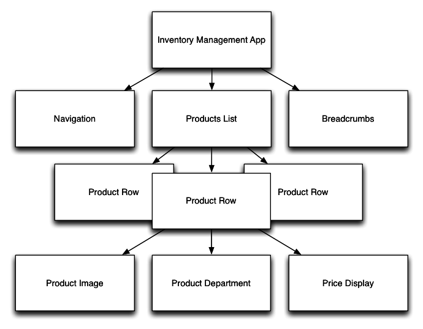
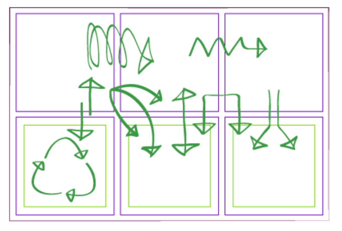
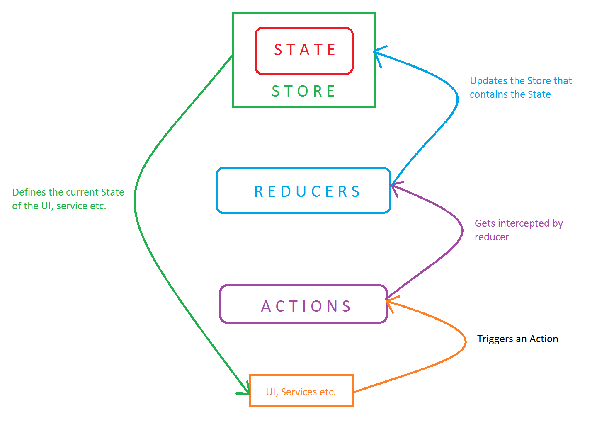
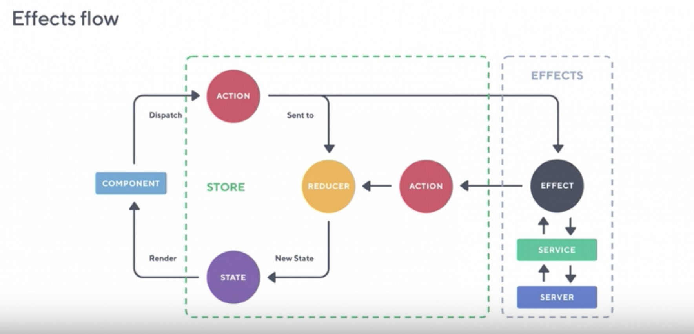

Project structure


Можна виділити 3 основні проблеми!Стан наших компонент не має бути хаотичним, ми маємо бачити залежності явно.Джерело зміни стану має бути відомим. Якщо стан був змінений ми повинні знати хто був ініціатором змін.Зміна стану не має відбуватись в усіх місцях додатку. Бажано відділити цю частину для кращого розуміння архітектури додатку.NGRXДанний пакет модулів імплементує redux-pattern і дає можливість скористатись деякими прийомами, які допомагають зробити додаток більш гнучким і маштабованим!Єдине точне джерело данних і його зручне використанняЗміну стану тільки за допомого чистих функцій — reducersІніціалізація змін може здійснюватись лише за допомогою відправки дій (actions) — яка описує тип змін і містить корисну нагрузку (payload).Ізоляція side-effect-ів.Потужний time-travelling дебагерRedux pattern works

